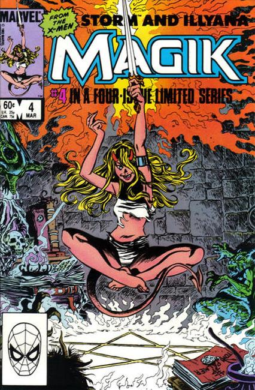

Magik was a four-issue comic book limited series published by Marvel Comics in 1983–1984, starring the fictional characters Magik and Storm. It was written by Chris Claremont and illustrated by John Buscema, Ron Frenz, Sal Buscema, and Tom Palmer. After being out-of-print for a few decades, the series was collected as a hardcover graphic novel titled X-Men - Magik: Storm & Illyana and released in December 2008.
Magik tells the story of Illyana Rasputin from a six-year-old child to a thirteen-year-old mutant/sorceress. The narrative is framed by Illyana reflecting on these events on her fourteenth birthday.
Belasco, demon lord of Limbo, wants to use Illyana to help the Elder Gods destroy Earth. To do this he has to place five bloodstones in a pentagon locket he has given to Illyana. When he first captures her at age six, he takes part of her soul and remakes it in his image, creating a bloodstone which he places in the locket. An elderly sorceress version of Storm (a former apprentice of Belasco) and an elderly, part beast version of Kitty Pryde (codenamed Cat) rescue Illyana.
Storm transports them to her garden sanctuary in Limbo. Unable to remove Belasco's corruption from Illyana, Storm decides to help her combat it by taking her on as an apprentice. She spends a year showing Illyana how to separate her astral body from her physical form, while showing her a massive oak that grew from an acorn she created. Disapproving of Illyana being trained in sorcery, Cat kidnaps her.

Cat takes Illyana to a replica of the Savage Land in Limbo, where she trains her physically and teaches her to sword fight. They then storm Belasco's tower. It is protected by a corrupted version of Nightcrawler, whom Cat kills. Cat then attempts to use her phasing power to take her and Illyana to Earth, but Belasco intercepts them. Belasco turns Cat into a feline demon and gives Illyana a knife. Illyana cuts herself, and the blood forms the second bloodstone in the locket.
Illyana spends three years learning magic from Belasco, while secretly reading every book in his library, plotting his downfall. Alone in her room, she attempts to imitate the creation powers Storm showed her by forming an acorn from a part of herself, only to find the acorn is black and rotten. Hearing Belasco's voice outside her room, she panics, and her mutant power to create teleportational light discs manifests itself. Illyana uses a disc to enter Belasco's library, hoping to steal his grimoire, but Storm intervenes, accidentally sending her into another disc.
She finds herself in the past, witnessing Storm "killing" Belasco, who claims to be immune to death while in Limbo; it is this act which binds Storm to Belasco. She teleports back to the present to find Storm battling Belasco. Cat fatally wounds Storm, then attacks Illyana. She kills Cat in self-defense. Belasco orders her to sacrifice Storm's soul to the Elder Gods. Instead, she kills Storm to save her soul and teleports to Storm's garden, where she buries her. Enraged by her defiance, Belasco captures Illyana, extracts another bloodstone from her essence, and casts her out into a wintery wilderness as punishment.
Illyana finds Storm's massive oak and spends years trying to use it to help create a living acorn from her essence, only to produce still more rotten acorns. When the oak finally crumbles to dust from her efforts, Illyana realizes that she was only trying to create life as a means to an end: destroying Belasco. She tries instead to manifest her desire directly, using the last of her power to create a "Soulsword".
The enchantment that held her in Storm's garden is banished in the process and she takes a stepping disc to confront Belasco. While fighting Belasco she realizes she is replaying the same scene by which Storm was corrupted, so she spares his life and he escapes. She then uses a light circle to return to Earth, rejoining the X-Men seconds after she had left them.
2000: Magik teams up with Nightcrawler to fight Dormammu, Mephisto and Nightmare, who plan to take over Limbo and then invade Earth.